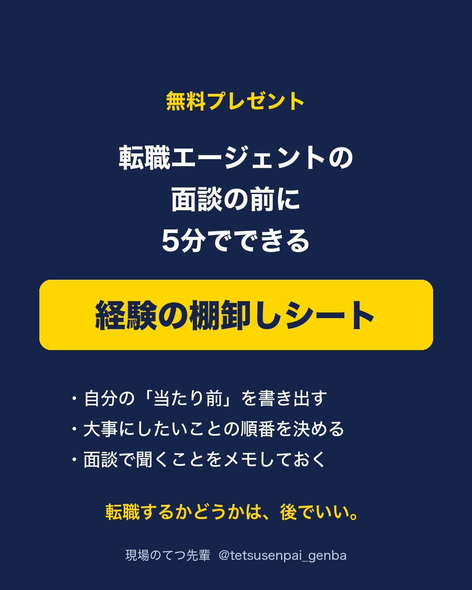
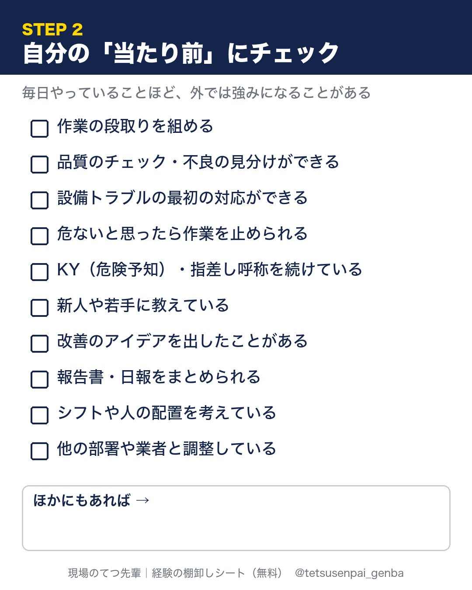
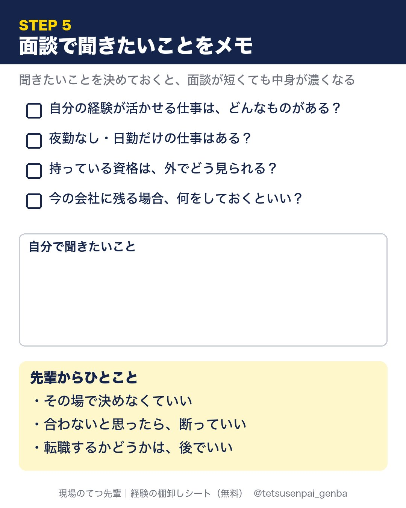
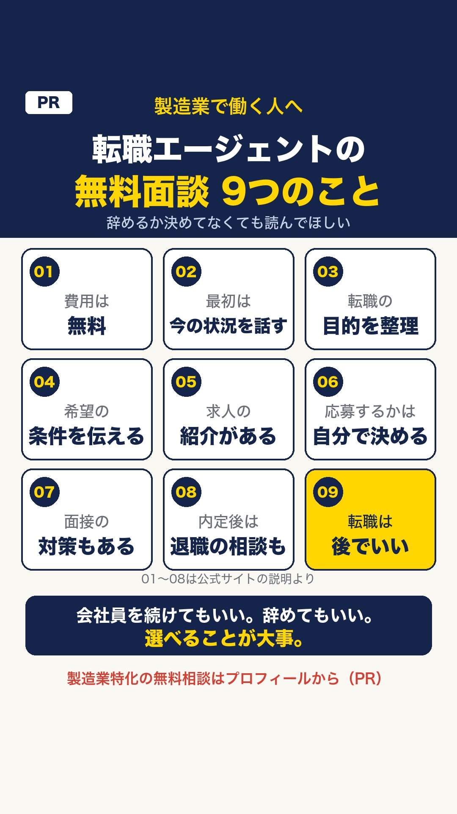

無料プレゼント
転職エージェントの面談の前に5分でできる「経験の棚卸しシート」（6ページ・PDF）
- 自分の「当たり前」を書き出す
- 大事にしたいことの順番を決める
- 面談で聞くことをメモしておく



登録などは不要です。スマホに保存して、メモに書き写して使ってもOK。
無料面談で何をするの？

01〜08はメーカーズジョブ公式サイトの説明（2026年11月12日確認）。09は、てつ先輩の考えです。
製造業に特化した相談先（PR）
製造業・メーカーに特化した転職エージェント「メーカーズジョブ」の無料相談です。
- 最初の面談で、今の状況・転職の目的・希望の条件を聞いて、キャリアを整理
- 求人の紹介・面接の対策・内定後の退職の相談まで
- 応募するかどうかは、自分で決める
ボタンを押すと、申し込みフォーム（名前・生年月日・メール・電話）が開きます。学生の方は対象外です。
てつ先輩はこのサービスを使ったことはありません。公式サイトの情報をもとに紹介しています。
会社員を続けてもいい。辞めてもいい。
選べることが大事。
Instagram・Threads：@tetsusenpai_genba